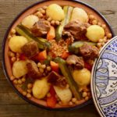

Tunisian Couscous

Description
Tunisian couscous is one of the countless variations of this delicious and versatile North African dish,
which consists of semolina served with a broth made with meat and vegetables.
Ingredients
-
2 lb lamb stew meat , cut into large pieces
-
6 cups couscous fine semolina (or medium)
-
2 onions , finely chopped
-
2 cloves garlic , pressed
-
4 tablespoons tomato paste
-
2 tablespoons harissa
-
2 tablespoons ground caraway
-
1 tablespoon ground coriander
-
1 teaspoon chili powder
-
4 turnips , cut in half
-
6 medium carrots , peeled
-
4 zucchini , peeled lengthwise, alternately leaving a layer of skin
-
6 small potatoes , peeled
-
10 oz. chickpeas (canned)
-
4 green hot peppers , fried in oil (optional)
-
Vegetable oil
-
Salt
-
Pepper
Equipment
Steps
-
Add ½ cup (120ml) of oil into a large pan. Fry the onion over medium heat for 2 minutes.
-
Add the garlic, tomato paste and harissa and continue frying for 2 minutes.
-
Add the caraway, coriander, and chili powder. Mix and continue cooking for another 2 minutes.
-
Add the lamb meat and mix well so that the pieces are covered with the sauce. Cook for 5 minutes stirring
regularly.
-
Cover with water. Add the turnips and carrots, and cook on low/medium heat for 45 minutes.
-
Meanwhile, prepare the couscous semolina as indicated on the package, with boiling water, salt, and oil.
-
After 45 minutes, add the zucchini, potatoes and chickpeas.
-
Cook for at least another 30 to 40 minutes over low to medium heat. Monitor the cooking of the vegetables.
If some vegetables are cooked before the meat, remove them from the pan and place them on a serving platter.
Proceed in the same way with all the vegetables to prevent them from cooking too much.
-
10 minutes before the end of cooking, get a few ladles of broth (one at a time) and wet the couscous
semolina.
Mix the semolina well after each ladle until it gets moistened enough.
-
Arrange the semolina in a tajine pot. Decorate the dish with the vegetables and the meat all around.
Garnish with fried green hot peppers (optional).
Home Page